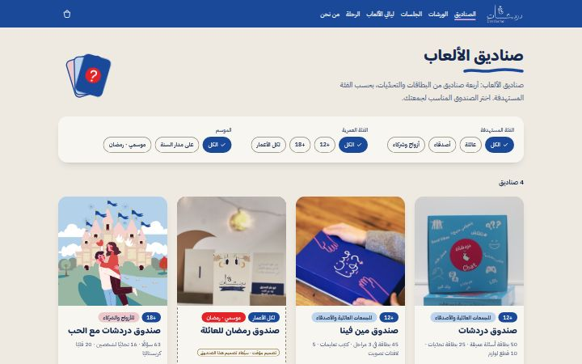
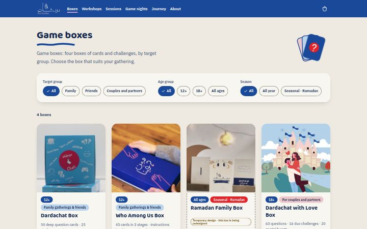
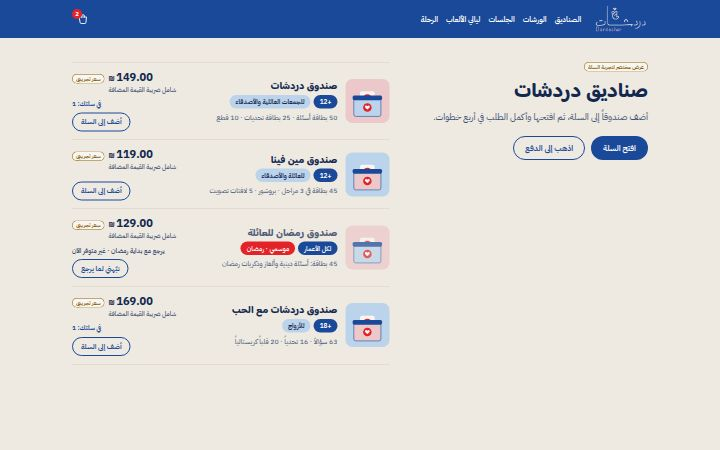
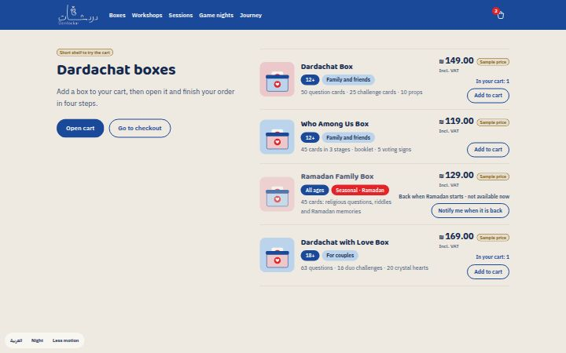
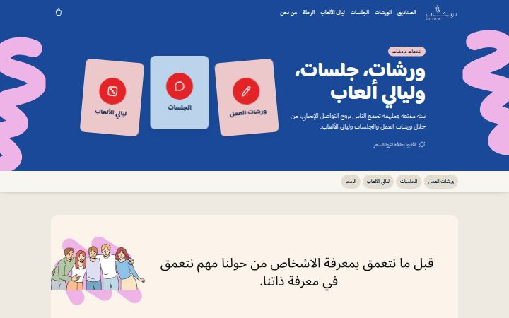
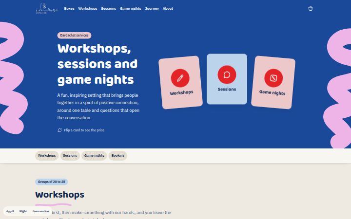
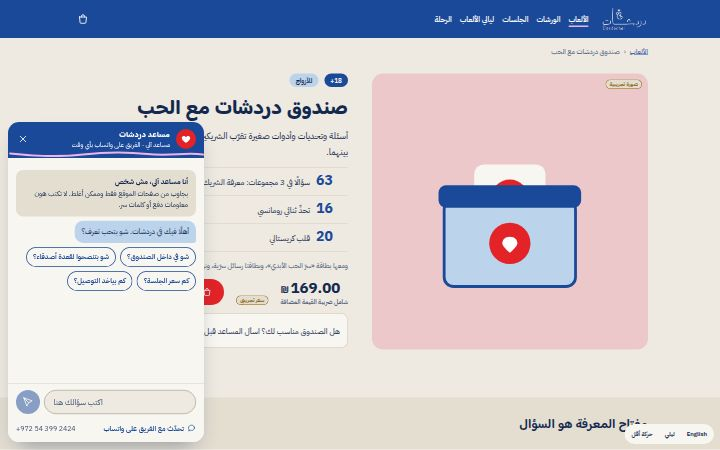
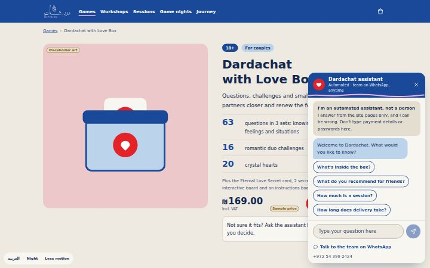

طريق الشراء
بنفس الترتيب اللي بيمشي فيه الزبون: من الصفحة الرئيسية لحد ما يثبّت طلبه.
-
الرئيسية
حزمة الشعار الزرقاء، «اسحب بطاقة»، الصناديق الأربعة، الخدمات، اقتباس، والتواصل.
خطوط الفرشاة بتنرسم، والبطاقة بتنسحب من الرزمة وبتنقلب.
-


الصناديق
الصناديق الأربعة مع فلاتر لمين، العمر، والموسم، وصندوق رمضان خارج موسمه.
غطا الصندوق بيميل، وقلب بيطير للسلة والعدد بينطّ.
-
صفحة الصندوق
«صندوق دردشات مع الحب»: معرض صور، شو في جوّا الصندوق، بطاقات للتجربة، والسعر مع الضريبة.
الصندوق بينفتح وقطعه بتطلع وحدة ورا وحدة.
-


السلة والدفع
سلة بتنزلق من الجنب، وبعدين الدفع بأربع خطوات: العنوان، التوصيل، طريقة الدفع (منها الدفع عند الاستلام)، والتأكيد.
عند التأكيد: خطوط بتنرسم، قلوب بتطلع مرة وحدة، وبطاقات بتتوزّع وبتنقلب.
حول المتجر
الرحلة، الخدمات وجهًا لوجه، والمساعد اللي بيجاوب عن الصناديق.
-
الرحلة
مقدّمة (تنبيه، الصوت مطفي، فحص WebGL)، طاولة ثلاثية الأبعاد بخمس محطات واختيارات، وبطاقة نتيجة مع خيار الحفظ والمشاركة. المحتوى كله تجريبي.
أول بطاقة بالرزمة بتنرفع وبتنقلب، وبطاقة النتيجة بتنقلب وتحتها فرشاة.
-


الخدمات
الورشات والجلسات وليالي الألعاب بأسعارها الحقيقية، والحجز عبر واتساب.
ثلاث بطاقات بتتوزّع وبتنقلب على السعر، والأقسام بتطلع مع التمرير.
-


المساعد
مساعد آلي بيعرّف عن حاله، بيجاوب من معلومات الصناديق مع المصدر، وبيحوّلك للفريق على واتساب.
نقاط الكتابة، وبعدين الجواب بيطلع كلمة كلمة.
كيف تجرّب
- الشريط أسفل كل صفحة: English/العربية، ليلي/كريمي، وتخفيف الحركة.
- جرّب الصفحات على الموبايل كمان: كل شاشة مبنية من 360 لـ 1440 بكسل.
- الرموز «تجريبي» على الصفحات بتعلّم كل شي مش نهائي.
لسّا تجريبي
- أسعار الصناديق (₪119–₪169) ورسومها: ما في أسعار ولا صور من العميل لسّا. أسعار الخدمات حقيقية.
- نصوص الأسئلة على البطاقات: مكتوبة من فريق التصميم بأسلوب دردشات.
- الرحلة كاملة (المحطات، الاختيارات، النتائج): الفكرة ملك العميل.
- مناطق التوصيل وأسعارها، رمز الخصم، ورقم الطلب؛ وأجوبة المساعد مكتوبة مسبقًا.
- ملفات الشعار مقصوصة من صورة شاشة؛ بدنا نسخة SVG من العميل.